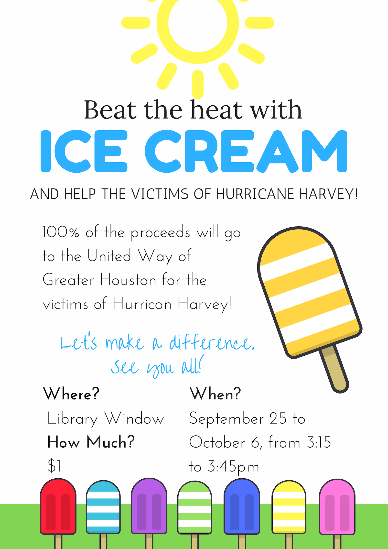

One of the activities I enjoy is running. In 8th grade (as well as in 6th grade) I was in track and field. I also swim and play badminton. I have also taught myself how to longboard. Outside of sports, I devote some time on learning Korean using an app on my phone as well as from a book. I am more familiar with the Korean characters and can read some words. I also play the piano and have received the Piano Merit Test Certification for 5 consecutive years. I have also received the honor roll all 4 quarters in my 8th grade year at Fallon Middle School. During my 8th grade year, I was also in a club where I mentored 6th graders who were struggling in some classes. We met once or twice a week to go over some lessons. We would also help them keep track of missing assignments, quizzes, and tests.
While I have yet to decide on a specific career, there are a few careers that I am interested in exploring while in high school. I am interested in potentially becoming any of these: a 3D animator, an environmental engineer, a software programmer, or a zoologist. Though the last job seems quite different from the rest, I believe that all of these jobs will need coding skills. By taking this Project Lead the Way course I hope to not only learn and better my skills in programming, but narrow down my career choices to find one I would be the most interested and best fitted for when I finally go to college.
I am creative and have experience using softwares like Procreate for drawing. I also have some coding skills and can write in HTML, Python, and CSS. Although I don’t have extensive experience in any one particular language, I believe that with hard work, I can acquire the skills. I am learning more about coding through Codecademy and a coding app called Mimo.
In middle school I was a member of the California Scholarship and participated in a popsicle fundraiser, two flea markets, Spoken Word Night, Fallon Night Live, and track meet fundraisers. So far, in my freshman year I have created blessings for backpacks for a club called Students Taking Active Roles Club. I have also created a poster for the Give Light Club and have volunteered at Fertile GroundWorks. 